Problem Definition
In this project, we need to implement a 2-layer neural network and a 3-layer neural network with a hidden layer of 20 nodes, and then train them with linear data, non-linear data and image pixel data of number 0 to 9. And we should also find the proper learning rate that makes the model works well.
The result is useful because it helps us to understand how to build a neural network and how to adjust parameters.
I have an assumption that the result of nerual network with more nodes in hidden layer will work better than which with less nodes.
The anticipated difficulty is to build the formula and process the data into decent matrix form which can be used in the formula.
Method and Implementation
For the 0 hidden layer neural network part, firstly I add a new parameter "method" into the class which makes it possible to switch the function.
Then I modified the formula in fit(), compute_cost() and predict() functions to make them normally work in neural network with 0 hidden layers, both for linear and non-linear data sets.
For the 1 hidden layer neural network(3-layer) part, firstly I add a new layer when modifying the initialize function, making the output of the input layer be transmitted into the hidden layer, and the result of hidden layer be passed to the input of output layer.
I implemented 3 new functions:
1. fit_NN1hidden() function, which contains a process of forward propagation and 2 processes of backward propagation(together with the L2 regularization to reduce the overfitting).
2. compute_cost_NN1hidden() function, which works as a loss function.
3. predict_NN1hidden() function, which computes the anticipate testing value of y using the X testing data using forward propagation.
As I use parameters input_dim and output_dim as the dimension of X and y, so that whatever the dimension of X and y is, the function could adapt to it.
Formulas I used are:
1. Sigmoid function: g(x) = 1 / 1 + exp^(-z) = exp(z) / exp(z) + 1;
2. Derivative of Sigmoid function: g'(x) = g(x) * (1 - g(x));
3. Weight update in back prop:delta2 = (theta2^T dot* delta3)*g'(z2)
4. Logistic cost function: cost(h_theta(x),y)= sum_{i=1}^m(-y*log(h_theta(x))-(1-y)*log(1-h_theta(x)))
5. L2 regularization function:EmpLoss(h) = 1/N sum L(ytrue, h(x))
h = argmin(EmpLoss(h) + lamda*Complexity(h))
Formulas inplemented in codes:
1: softmax_scores = exp_z / (exp_z + 1);
2 & 3: beta = np.multiply(np.dot(beta_hide, self.theta2.T), np.multiply(softmax_scores, (1 - softmax_scores)))
4:
logloss[i] = -np.sum(np.log(softmax_scores[i,:]) * one_hot_y[i,:])
data_loss = np.sum(logloss)
return 1./num_examples * data_loss
5: self.theta -= lr * (dtheta + (self.theta * self.theta) / (input_dim * 2))
Experiments
We use DATA/LinearX.csv, DATA/LinearY.csv, DATA/Non-LinearX.csv, DATA/Non-LinearY.csv as the source data, corresponding to Linear Data array, labels corresponding to Linear data, Non-Linear data array, labels corresponding to Non-Linear data. For the last extra-credit problem, we use the model to train DATA/Digit_X_train.csv and DATA/Digit_y_train.csv, then test the model on DATA/Digit_X_test.csv and DATA/Digit_y_test.csv.
There are 11 times of trials.
1. For linear data, using 2-layers NN. Learning rate is 0.01.
2. For Non-linear data, using 2-layers NN. Learning rate is 0.01.
3. For linear data, using 3-layers NN with 3 nodes. Learning rate is 0.01.
4. For linear data, using 3-layers NN with 20 nodes. Learning rate is 0.01.
5. For linear data, using 3-layers NN with 20 nodes. Learning rate is 0.001.
6. For Non-linear data, using 3-layers NN with 3 nodes. Learning rate is 0.01.
7. For Non-linear data, using 3-layers NN with 20 nodes. Learning rate is 0.01.
8. For Non-linear data, using 3-layers NN with 20 nodes. Learning rate is 0.001.
9. For Digital data, using 3-layers NN with 20 nodes. Learning rate is 0.01.
10. For Digital data, using 3-layers NN with 20 nodes. Learning rate is 0.001.
The evalution parameter is the accuracy.
Results
Results | ||
| Trial | Source Image | Result Image |
| trial 1 | 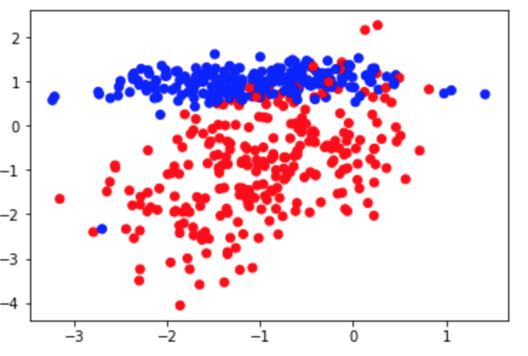 | 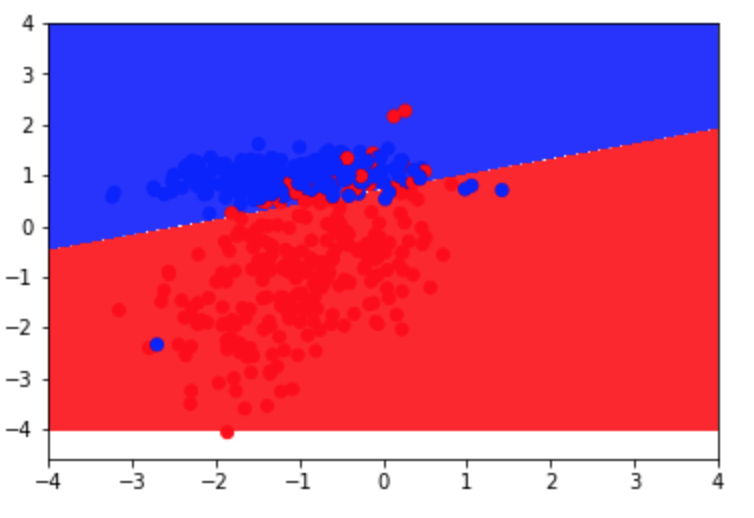
1. Accuracy = 0.93; |
| trial 2 | 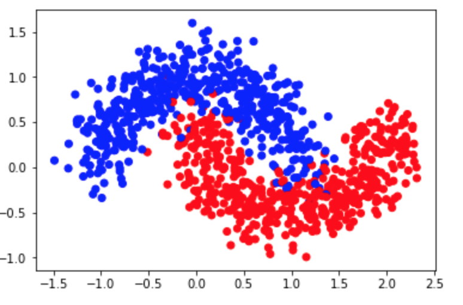 | 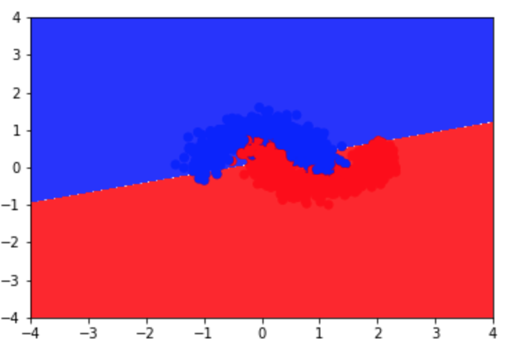 2. Accuracy = 0.875; |
| trial 3 | 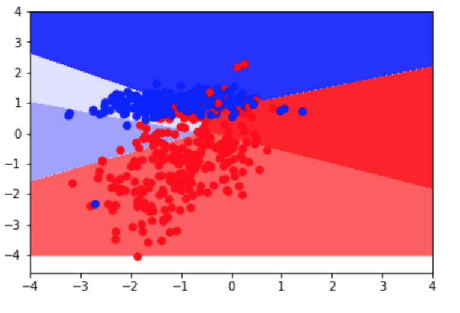 3. Accuracy = 0.934; |
|
| trial 4 | 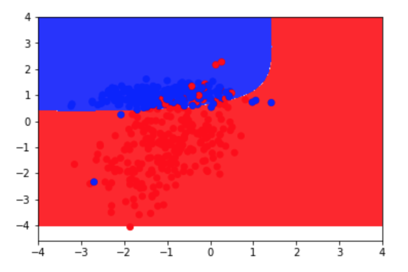 4. Accuracy = 0.93; |
|
| trial 5 | 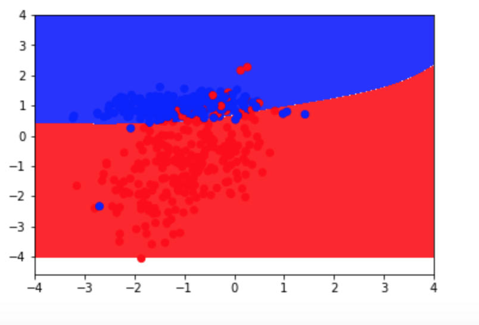 5. Accuracy = 0.934; |
|
| trial 6 | 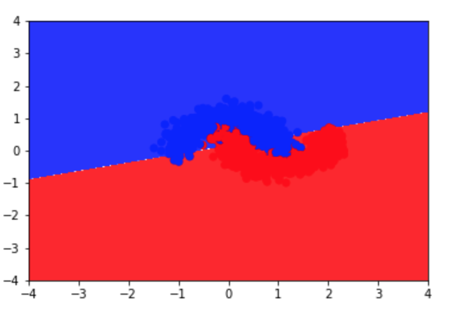 6. Accuracy = 0.875; |
|
| trial 7 | 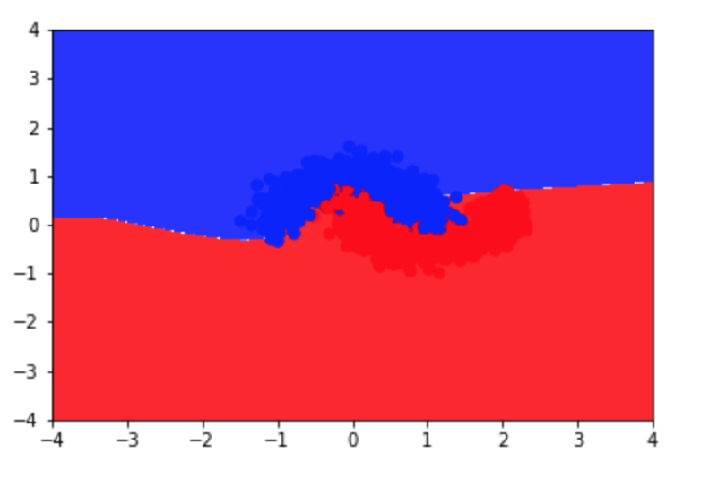 7. Accuracy = 0.884; |
|
| trial 8 | 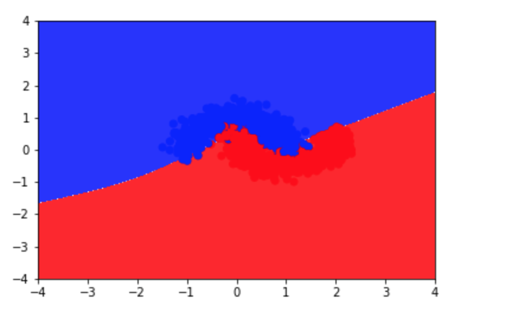 8. Accuracy = 0.937; |
|
| trial 9 | 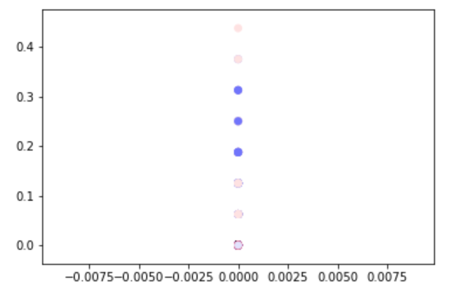 | 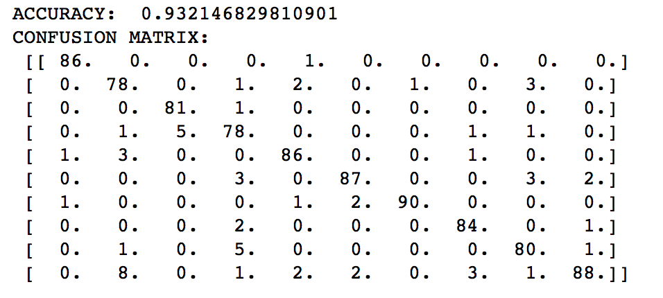 9. Accuracy = 0.932; |
| trial 10 | 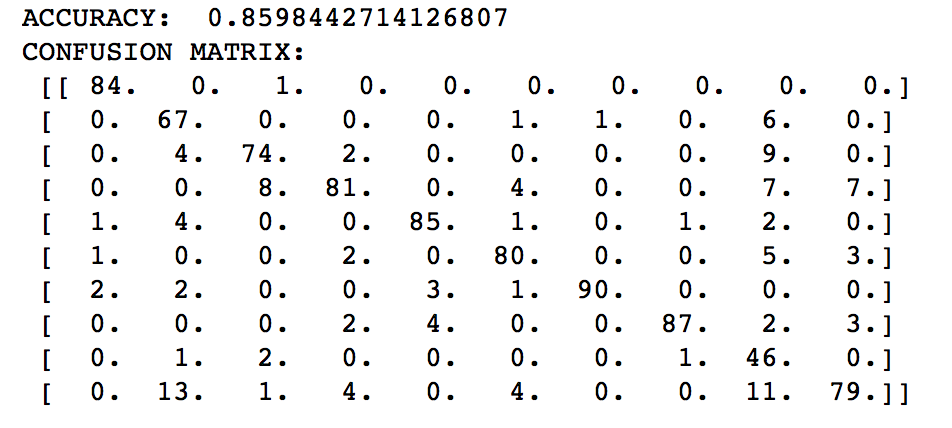 10. Accuracy = 0.859; |
|
Discussion
- For all the data sets, the model come to decent results(no less than 0.85).
- It can work on both linear and non-linear data, and also data with more than 3 dimensions.
- It's very easy to understand and use.
- It helps us to deeply understand the theorem.
- The L2 normalization works not very well. The difference between using L2 and not using L2 is just 1% scale.
- Not extremely precise(no more than 0.95).
- The result shows that the model is with some limitations. Firstly, the accuracy of the model is not very stable. Sometimes, rising the lr could improve the accuracy but sometimes it could not and so does the node number. I want to find out whether the parameter is increasing or decreasing the accuracy but I am not clear throughing the result. The only thing I am sure is that 3-layer NN is better than 2-layer NN.
- Maybe I could keep on increasing the number of layers and add more trial on that to find out the precise result and answer my question.
Strengths of my model:
Weaknesses of my model:
Discussion considering result:
Conclusions
We have implemented the neural network with 2 layers and 3 layers and got a bunch of decent data. Meanwhile, we have a deeper understanding of the theorem. For processing multidimension data, NN is a good way as it's precise and easy to implement.Also, as the number of parameters is not very large, we could easily modify particular parameter and observe the result causing by that parameter, such as the node number and learning rate.
Credits and Bibliography
http://blog.csdn.net/bitcarmanlee/article/details/51165444https://www.cnblogs.com/KID-XiaoYuan/p/7261697.html
http://www.cs.bu.edu/fac/betke/cs440/restricted/lectures/ai-learning-from-examples-2016.pdf
http://www.cs.bu.edu/faculty/betke/cs440/restricted/labs/CS440640Lab5.pdf
Credit to discussion with Mingrui Yang and Shifeng Li.